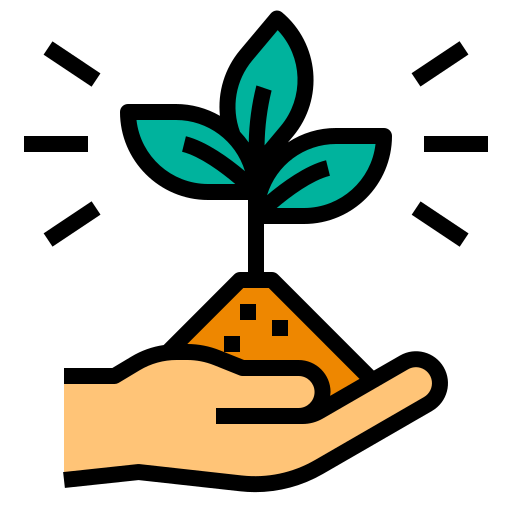
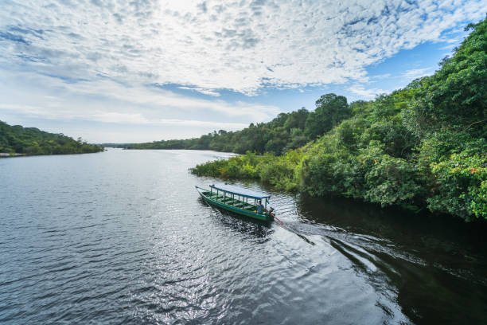
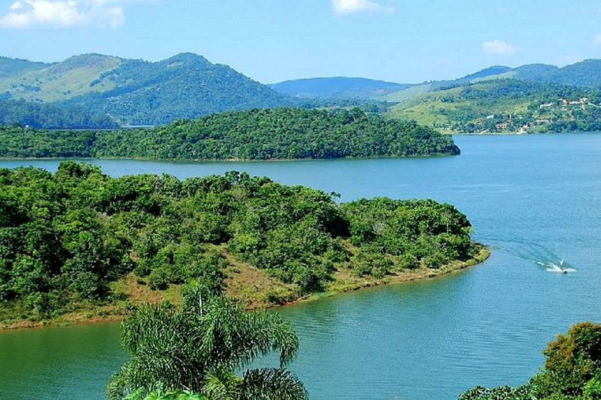
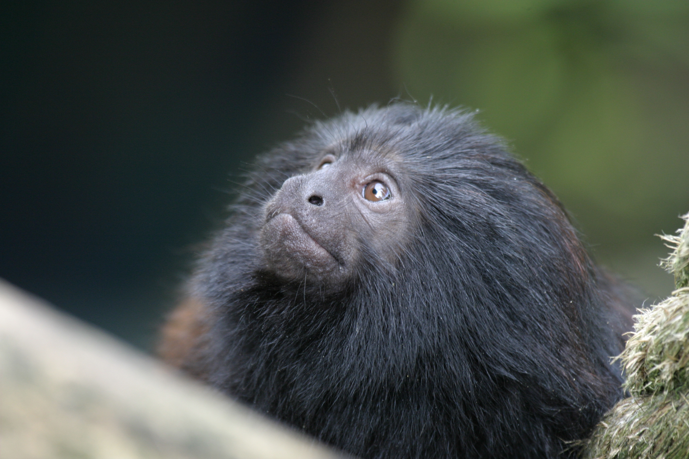
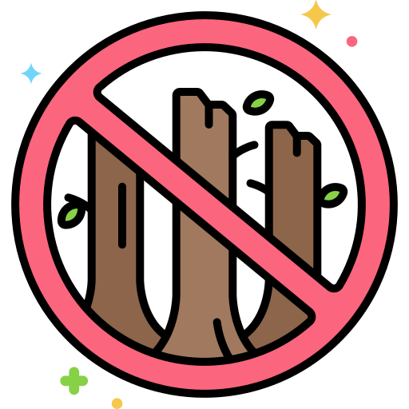
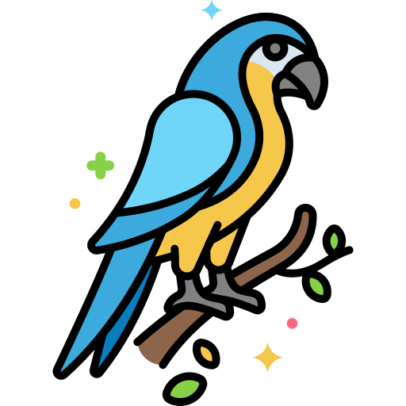

-
Árvores plantadas
14.368
-
Valor arrecadado
R$ 68.989,59
-
Animais salvos

7.269
Projetos
-

O IPÊ – Instituto de Pesquisas Ecológicas atua desde o ano 2000 na região Amazônica, mais especificamente na região do baixo Rio Negro, realizando projetos que visam à conservação da biodiversidade e a sustentabilidade socioambiental do mosaico de unidades de conservação situado nesta região, com cerca de 1,800,000 hectares, atuando nas seguintes unidades: Estação Ecológica de Anavilhanas; Parques Estaduais do Rio Negro - Setor Norte e Setor Sul, APA Estadual da Margem Esquerda do Rio Negro - Setor Aturiá-Apuazinho e APA Estadual da Margem Direita do Rio Negro - Setor Puduari-Solimões; Reserva de Desenvolvimento Sustentável Municipal do Tupé.
Baixo Rio Negro
-

O Pantanal é uma das maiores áreas de wetlands contínuas do planeta e cobre cerca de 160.000 km² de planícies alagáveis de baixa altitude. A vegetação sofre influência de quatro biomas: Floresta Amazônica, Cerrado (predominante), Chaco e Mata Atlântica. No bioma, o IPÊ desenvolve a Iniciativa Nacional de Conservação da Anta Brasileira.
Pantanal e Cerrado
-

A sede do IPÊ está em Nazaré Paulista, localizada a menos de 100 quilômetros de distância da cidade de São Paulo. Este município destaca-se pelas belezas cênicas e naturais, além de fazer parte de uma região estratégica para o uso e a conservação de recursos socio-ambientais como a água e a Mata Atlântica. É nesse local que se encontram os reservatórios do Sistema Cantareira, responsável pelo fornecimento de água a quase dez por cento da população brasileira. Para ajudar a conservar esses recursos, o IPÊ desenvolve projetos de pesquisa e educação ambiental, atrelados a ações de conservação na região. Os principais temas dos projetos desenvolvidos em Nazaré são: restauração de áreas de Mata Atlântica, conservação de mamíferos silvestres, serviços ecossistêmicos e negócios sustentáveis.
Nazaré Paulista
-

Em 1942, foi criada a "Grande Reserva do Pontal do Paranapanema", localizada no extremo oeste do Estado de São Paulo, para proteger 247 mil hectares de florestas. Porém, nos anos seguintes, essa unidade de conservação foi submetida a um intenso processo de fragmentação florestal associado a conflitos fundiários e ocupações de terras por grandes fazendeiros.
Pontal do Pararema
Causas Ambientais
-

Desmatamento
zero -

Preservação da biodiversidade
-
Conscientização ambiental
Uma das maiores ameaças ao meio ambiente é o desmatamento
e a degradação das florestas. No Brasil, esta situação é particularmente preocupante, já que a
Amazônia — que concentra boa parte das nossas maiores riquezas naturais — tem árvores derrubadas
diariamente. Estima-se que, por ano, ocorra a perda de 5 mil quilômetros quadrados da floresta.
Se nada for feito, no fim do século só terá restado metade da floresta amazônica que conhecemos
hoje.
Entre as consequências do desmatamento, destaque para a perda da
biodiversidade e para as mudanças climáticas. Segundo especialistas, a seca enfrentada pela
região sudeste brasileira nos últimos anos é reflexo do crescente desmatamento da Amazônia, que
influencia na evaporação de água e nas chuvas que ocorrem nos estados da região.
Preservação do meio ambiente refere-se ao conjunto de práticas
que
visam proteger a natureza das ações que provocam danos ao meio ambiente.
Devido ao atual modelo econômico, baseado em elevados níveis de consumo, o ser humano tem
causado inúmeros prejuízos para a flora e fauna no planeta, ocasionando desequilíbrios
ambientais irreversíveis.
Nosso planeta está passando por alterações climáticas muito
sérias. Recursos naturais importantes estão se esgotando e desastres ecológicos, como o
derramamento de óleo na costa brasileira, têm sido cada vez mais frequentes. Tudo isso devido à
ação do ser humano. Por isso, hoje em dia, ter consciência ambiental é uma obrigatoriedade.
Afinal de contas, precisamos entender por que esses fenômenos acontecem e de que forma podemos
ajudar a resolver o problema.